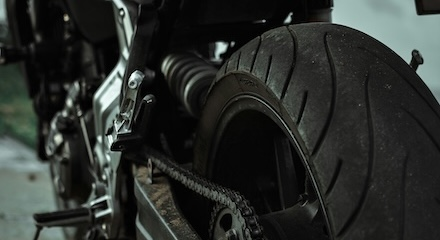
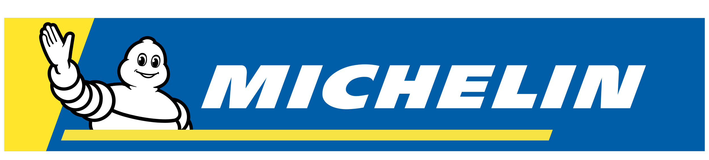
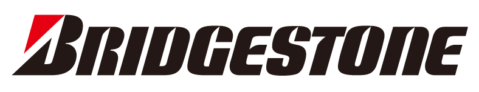
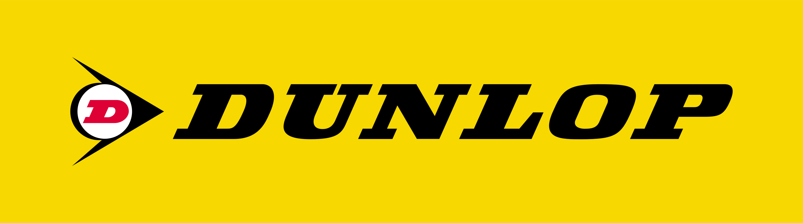
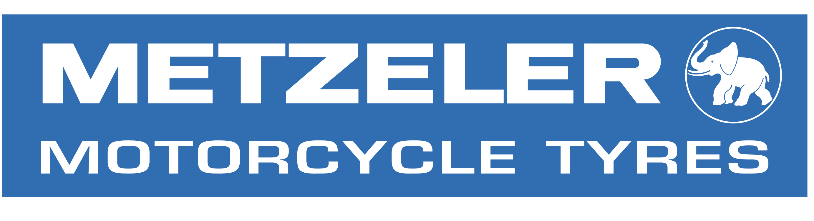

Motorcycle tyres · Shrewsbury
Motorcycle tyres in Shrewsbury
Motorcycle tyre supply, fitting and wheel balancing with advice based on the bike, the way you ride and your budget.
Grip, feel & confidence
Tyres matched to the motorcycle
There is no single best tyre for every rider. Commuting, touring, weekend road riding, sports use, classics and mixed conditions can all call for different priorities.
- Motorcycle tyre supply
- Professional fitting
- Wheel balancing
- Tyre condition advice
- Options discussed around use and budget

Brands
Major motorcycle tyre manufacturers
Availability varies, but we can discuss suitable options from established motorcycle tyre ranges.




Before you enquire
Tyre fitting FAQs
What information should I send?
Your registration, make and model, current tyre sizes if known, and whether you want a specific tyre or would like recommendations.
Can you recommend a tyre?
Yes. Tell us how the motorcycle is used, what matters most to you and your budget, and suitable options can be discussed.
Need help with your bike?
Tell us what it needs.
Send the bike details and what you’re experiencing. We’ll review the enquiry and contact you to arrange the next step.